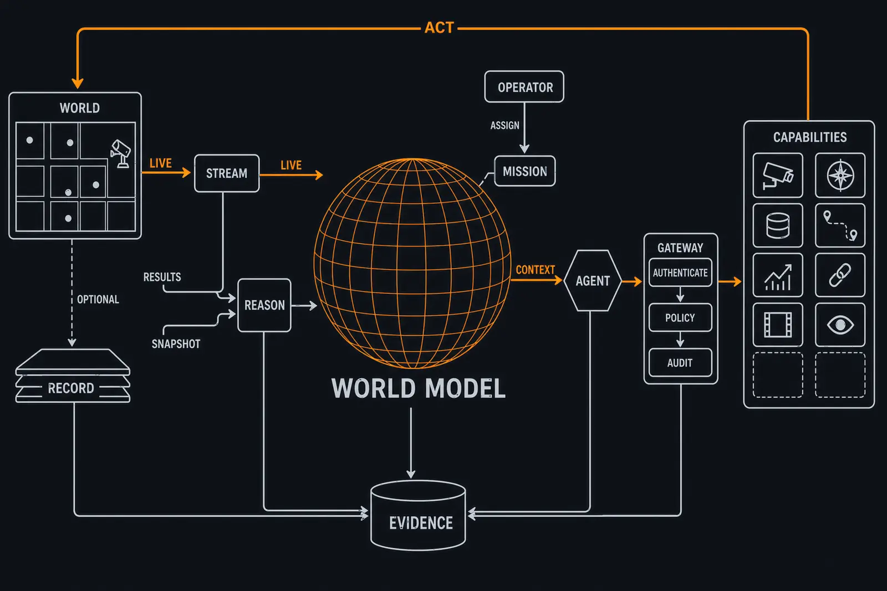
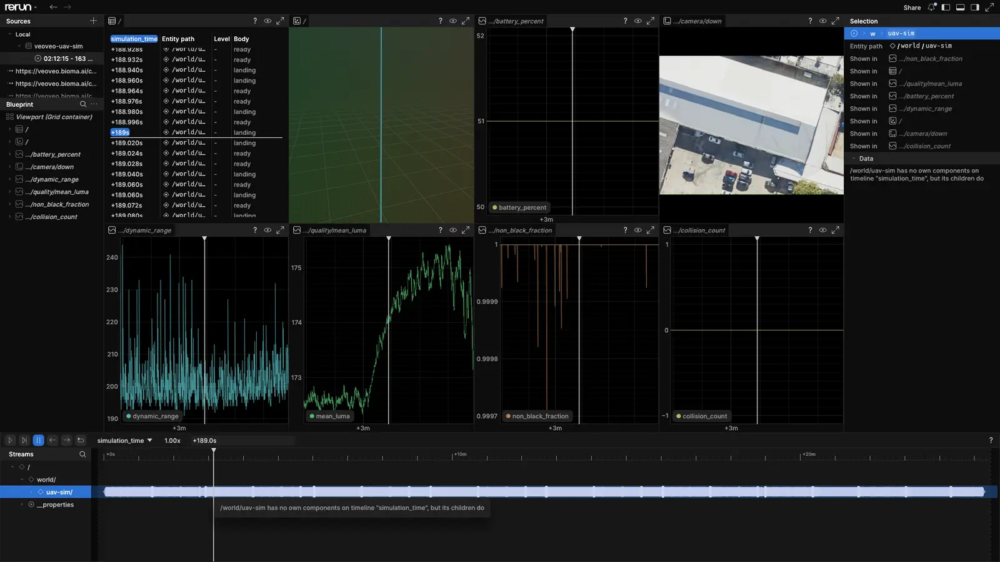
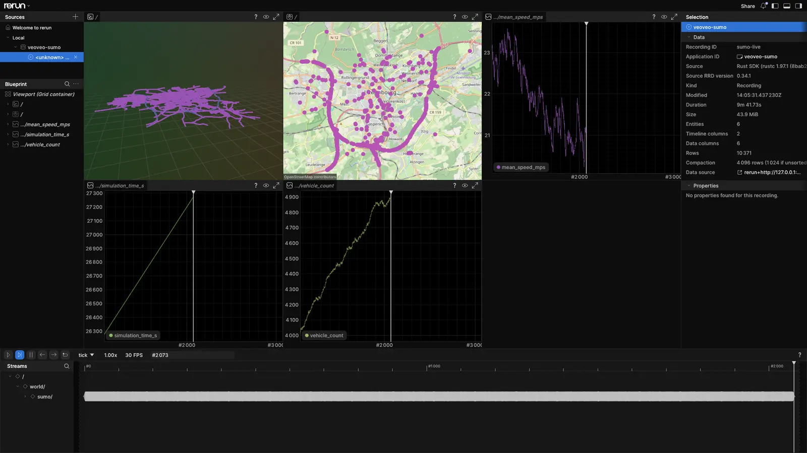
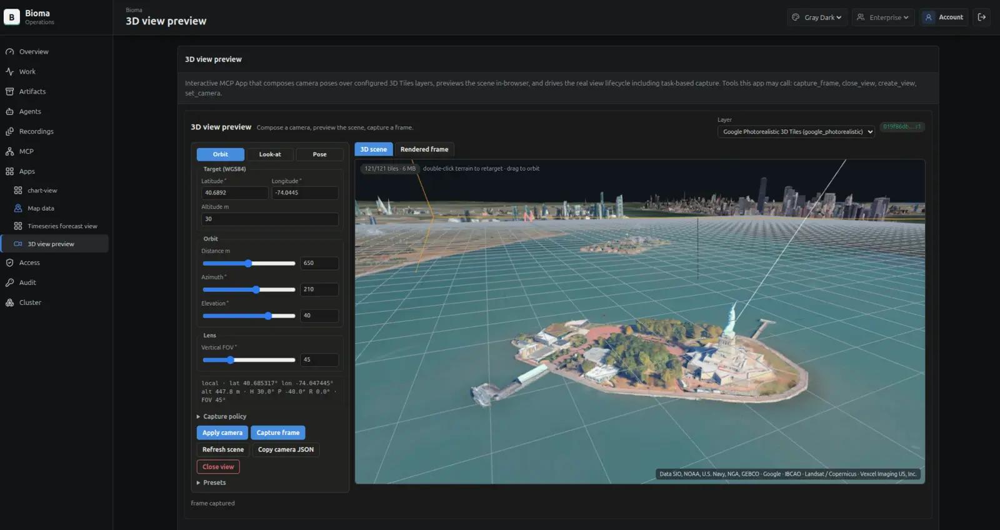
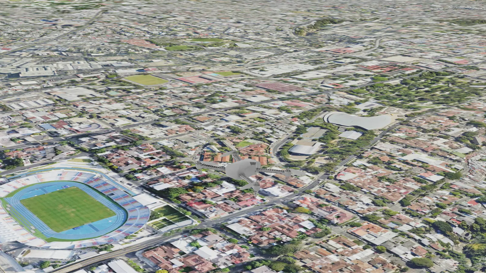

Veoveo
Veoveo is a self-hosted platform for AI agents that work with physical systems. Agents read sensors and camera streams, fly simulated UAVs, control simulated traffic, and record each run so people can query it later. The organization that deploys Veoveo runs it on its own cluster, identity provider, storage and models.
- Role
- Author (2,529 commits)
- Language
- Rust
- Simulators
- Isaac Sim with PX4, SUMO
- Interface
- Model Context Protocol
Problem
Teams that operate drones, vehicles or cameras want AI agents to help run them. Most cannot send their credentials, video or mission data to a vendor, and afterwards they need a record of what each agent was allowed to do and what it did.
Design
Every request goes through one gateway, whether an operator types it or an agent issues it. The gateway authenticates the caller, checks the policy for that profile, and writes the decision to an audit log. The agent harness holds no credentials, so any MCP host can drive an installation.
Capabilities are MCP servers behind the gateway: maps and routing, UAV simulation, traffic simulation, video detection and tracking, forecasting, optimization and SQL. Long-running work runs as MCP tasks that continue after a client disconnects. Each output is stored as an artifact with an owner, provenance and release state.
A vehicle command requires an exclusive command lease for that vehicle. The current vehicle adapters are simulators: Isaac Sim with PX4 for UAVs and SUMO for road traffic. A real-vehicle adapter would use the same grants and leases.

Results
An operator sent one message to a pilot agent: fly uav-1 to Times Square. The message contained no coordinates and granted no vehicle authority. The agent resolved the destination through the map server and flew under its existing grant for uav-1.
The first accepted run covered 9.227 km in 13 minutes 10 seconds. It completed all four waypoints, arrived at 40.7580° N, 73.9855° W with zero collisions, and released its command lease. The recording hub archived the camera, pose, telemetry and mission lifecycle for the whole run.
UAV-E2E-001 acceptance test describes how to repeat the run.
Screens




Stack
- Rust gateway, servers and web clients
- Model Context Protocol: tools, resources, tasks, subscriptions and MCP Apps
- Isaac Sim, PX4 and SUMO for simulated vehicles and traffic
- Rerun for synchronized recordings
- Kubernetes, Helm charts, OCI images and GitOps deployment; OIDC and OAuth sign-in